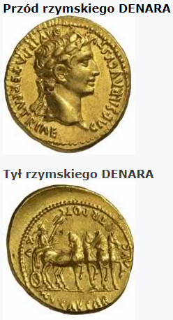
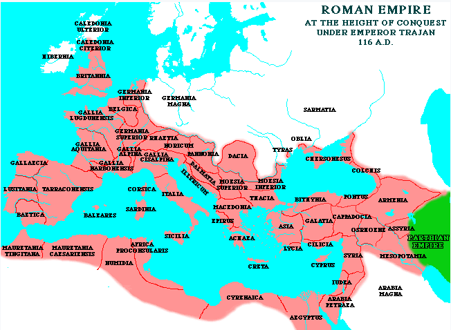
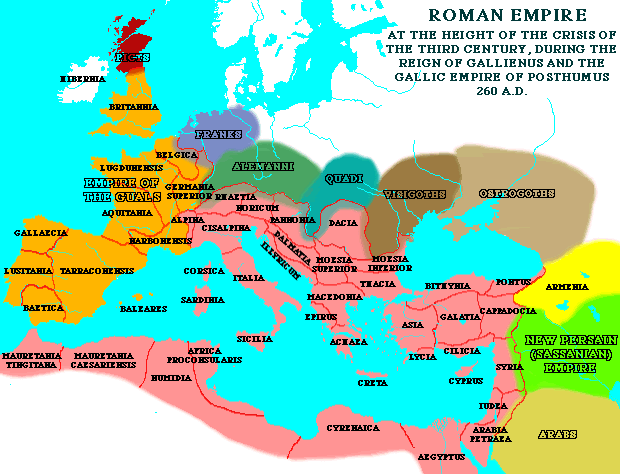

Rozdział 6
„I widziałem, jak Baranek zdjął pierwszą z siedmiu pieczęci i usłyszałem głos jednej z czterech postaci, donośny jak grzmot, mówiący: Chodź! (2) I widziałem, a oto biały koń, ten zaś, który siedział na nim, miał łuk, a dano mu koronę, i wyruszył jako zwycięzca, aby dalej zwyciężać. (3) A gdy zdjął drugą pieczęć, usłyszałem, jak druga postać mówiła: Chodź! (4) I wyszedł drugi koń, barwy ognistej, a temu, który siedział na nim, dano moc zakłócić pokój na ziemi, tak by mieszkańcy jej zabijali się nawzajem; i dano mu wielki miecz. (5) A gdy zdjął trzecią pieczęć, usłyszałem, jak trzecia postać mówiła: Chodź! I widziałem, a oto koń kary, ten zaś, który siedział na nim, miał wagę w ręce swojej. (6) I usłyszałem jakby głos pośród czterech postaci mówił: Miarka pszenicy za denara i trzy miarki jęczmienia za denara; a oliwy i wina nie tykaj. (7) A gdy zdjął czwartą pieczęć, usłyszałem głos czwartej postaci, która mówiła: Chodź! (8) I widziałem, a oto siwy koń, a temu, który na nim siedział, było na imię Śmierć, a piekło szło za nim; i dano im władzę nad czwartą częścią ziemi, by zabijali mieczem i głodem, i morem, i przez dzikie zwierzęta ziemi. (9) A gdy zdjął piątą pieczęć, widziałem poniżej ołtarza dusze zabitych dla Słowa Bożego i dla świadectwa, które złożyli. (10) I wołały donośnym głosem: Kiedyż, Panie święty i prawdziwy, rozpoczniesz sąd i pomścisz krew naszą na mieszkańcach ziemi? (11) I dano każdemu z nich szatę białą, i powiedziano im, aby jeszcze odpoczęli przez krótki czas, aż się dopełni liczba współsług i braci ich, którzy mieli podobnie jak oni ponieść śmierć. (12) I widziałem, gdy zdjął szóstą pieczęć, że powstało trzęsienie ziemi i słońce pociemniało jak czarny wór, a cały księżyc poczerwieniał jak krew. (13) I gwiazdy niebieskie spadły na ziemię, podobnie jak drzewo figowe zrzuca figi swoje, gdy wiatr gwałtowny nim potrząśnie; (14) i niebo znikło, jak niknie zwój, który się zwija, a wszystkie góry i wyspy ruszone zostały z miejsc swoich. (15) I wszyscy królowie ziemi i możnowładcy, i wodzowie, i bogacze, i mocarze, i wszyscy niewolnicy, i wolni ukryli się w jaskiniach i w skałach górskich, (16) i mówili do gór i skał: Padnijcie na nas i zakryjcie nas przed obliczem tego, który siedzi na tronie, (17) i przed gniewem Baranka, albowiem nastał ów wielki dzień ich gniewu, i któż się może ostać?” (Objawienie 6:1-17).
Zgodnie z proroctwem Daniela ostatnim mocarstwem światowym (czwarta bestia) miał być Rzym:
„I tak rzekł: Czwarte zwierzę oznacza czwarte królestwo na ziemi, które jest inne niż wszystkie królestwa; ono pochłonie całą ziemię, podepcze i zmiażdży ją.” (Daniela 7:23).
Czterej jeźdźcy, pierwszych czterech pieczęci, symbolizują cztery różne oblicza pogańskiego Rzymu:
„Tak mówi Pan: Oto nadchodzi lud z ziemi północnej i wielki naród rusza z krańców ziemi. (23) Mocno trzymają łuk i oszczep, są okrutni i nie znają litości. Ich głos huczy jak morze, pędzą na koniach, każdy gotowy do boju przeciwko tobie, córko Syjońska.” (Jeremiasza 6:22), którego centralnym kultem był bożek słońca:
„Kazał usunąć konie, które królowie judzcy postawili na cześć boga słońca u wejścia do świątyni Pana w pobliżu komnaty eunucha Natanmeleka, która była przy arkadach, a rydwan boga słońca spalić.” (2 Królewska 23:11).
Pierwsza pieczęć.
Złoty wiek Imperium rzymskiego, mocarstwa, podczas którego Chrystus zapoczątkował swe dzieło.
Rzym wchodził w swój złoty wiek i był u szczytu swych podbojów.
Panowanie (96-180):
- Nerwy,
- Trajana,
- Hadriana,
- Antoniusza Piusa,
- Marka Aureliusza,
Zgodnie określono jako „najszczęśliwszy i najwspanialszy okres w całej historii ludzkości” (Edward Gibbon).
„Daje to w sumie obraz tak świetnego rozkwitu, jakiego ludzkość nigdy przedtem w tych rozmiarach nie osiągnęła. Był to bez wątpienia najświetniejszy okres ich rozwoju, aż do dnia dzisiejszego. Niewiele jest też krajów obecnie, które pod względem ogólnego poziomu swego rozwoju kulturalnego i dobrobytu materialnego mogą się z ówczesnym cesarstwem porównać” (Dzieje Rzymskie, część 3, Ludwik Piotrowicz).
Dodatkowym potwierdzeniem tego, że pierwsza pieczęć dotyczy tego okresu czasu jest to, że symbolem każdego z powyższych władców był właśnie BIAŁY KOŃ z JEŻDŻCEM Z ŁUKIEM!!! (na odwrocie monet także widniał ten właśnie symbol).
Jeszcze doskonalszy dowód: na odwrocie monety Marka Aureliusza widniało dwoje jeźdźców z łukami, a na przedzie jego głowa z wieńcem i napis:
„zwycięzca nadal zwycięża”!!!
Macie jeszcze jakieś wątpliwości?
Jeździec na białym koniu z „WIEŃCEM na głowie” był głównym symbolem Rzymu i cesarza.
Rzymianie również wielbili boga wojny MARSA, który zawsze dosiadał BIAŁEGO KONIA.
Głowa z wieńcem i jeździec z koniem były wybite na odwrocie większości ich monet, stanowiło to symbol potęgi i władzy.

Za tych czasów dochodziło jednak do licznych prześladowań chrześcijan:
„Bezbożny źle myśli o sprawiedliwym I zgrzyta na niego zębami. (13) Ale Pan śmieje się z niego, Bo widzi, że nadchodzi dzień jego. (14) Bezbożni dobyli miecza i napinają łuk swój, Aby powalić ubogich i biednych, Aby wymordować tych, którzy idą drogą prawą, (15) Lecz miecz ich wbije się w ich własne serca, A łuki ich będą połamane.” (Psalm 37:12-15).
Jak widać w powyższych wersetów - jeździec na koniu z łukiem, symbolizuje pogańską siłę (mocarstwo) przeciwne ludowi Bożemu.
„Niby łuk napinają swój język; kłamstwo, a nie prawda panuje w kraju. Albowiem kroczą od przewrotności do przewrotności, a nie uznają Pana. (4) Jeden zwodzi drugiego, nie mówiąc prawdy; przyzwyczaili swój język do kłamstwa, postępują przewrotnie, nie chcą się nawrócić. (7) Ich język jest śmiercionośną strzałą, słowa ich ust są oszustwem. Jeden do drugiego mówi: Pokój, a w sercu swoim przygotowuje mu podstęp. (8) Czy mam ich za to nie karać - wyrocznia Pana - i nad narodem takim jak ten nie dokonać pomsty?” (Jeremiasza 9:1-4, 7-8).
Rzymskie Imperium było w sile, aż do końca drugiego wieku, kiedy Rzym był politycznie stabilny, silny, panował pokój (Pax Romana) i pomyślność.
Granice Imperium rozszerzały się, aż do końca II wieku.
Jeżeli Bóg chciał zobrazować ten okres, to nie mógł wybrać lepszego symbolu niż biały koń i podbój.
Władza jeźdźców rozciągała się nad „czwartą częścią ziemi” – odpowiada to faktycznie zarządzanemu przez Rzym obszarowi (również w średniowieczu była to mniej więcej czwarta część znanego wówczas świata, którą zarządzał biskup Rzymu).
|
IMPERIUM RZYMU (1/4 znanego świata) |

„Łuki” Rzymu niebawem miało spotkać to samo, co Babilon:
„Krzyk słychać z Babilonu i wieść o wielkim zniszczeniu z ziemi chaldejskiej, (55) gdyż Pan niszczy Babilon i usuwa z niego wielki gwar; choćby ich fale huczały jak potężne wody i rozlegał się hałaśliwy ich głos, (56) gdyż pustoszyciel przybył do Babilonu i jego bohaterowie zostali wzięci do niewoli, ich łuki złamane, Pan jest bowiem Bogiem odpłaty, On rzetelnie odpłaca.” (Jeremiasza 51:54-56).
Podobnie jak czynił Bóg wcześniej, tak w tych samych symbolach ukazuje sąd nad Rzymem:
„Przed nim idzie zaraza, a za nim podąża mór. (6) Trzęsie się ziemia, gdy powstaje, gdy patrzy, drżą narody. Pękają odwieczne góry, zapadają się prastare pagórki, jego drogi są wieczne. (12) W zawziętości kroczysz po ziemi, w gniewie depczesz narody. (14) Przebiłeś wodza jego wojska jego własną strzałą, jego przywódcy są rozproszeni jak plewa przez burzę, gdy rozwarli swoje szczęki, aby pochłonąć w skrytości ubogiego. (15) Jego rumaki wpędziłeś w morze, w potoki wielkich wód. (16) Gdy to usłyszałem, struchlało moje ciało, na wieść o tym drgnęły moje wargi; lęk śmiertelny przeszył moje członki, a kolana zachwiały się pode mną. Zadrżałem przed dniem utrapienia, który nadchodzi nad lud, na lud, który mnie uciska.” (Habakuka 3:5-6,12,14-16).
Trzy kolejne pieczęci opisują Imperium Rzymskie w III wieku po Chrystusie.
Druga pieczęć.
Przed upadkiem Jeruzalem w 587 r.p.n.e. Bóg powiedział do izraelitów:„I skieruję przeciwko nim miecz, głód i zarazę, póki nie wyginą z ziemi, którą dałem im i ich ojcom.” (Jeremiasza 24:10).
„Tak mówi Wszechmocny Pan: Klaśnij w dłonie, tupnij nogą i powiedz: Biada wszystkim złym ohydom domu izraelskiego, które padną od miecza, głodu i zarazy. (12) Kto jest daleko, umrze od zarazy, a kto jest blisko, padnie od miecza; kto pozostanie i uchowa się, umrze z głodu. Tak wywrę na nich swój gniew.” (Ezechiela 6:11-13).
Podobnie powiedział o Egipcie:
„I nawiedzę tych, którzy zamieszkają w Egipcie, tak jak nawiedziłem Jeruzalem - mieczem, głodem i zarazą.” (Jeremiasza 44:13).
1. Miecz
2. Głód
3. Zaraza
To samo przesłanie zostało skierowane do Imperium Rzymu w kolejnych, czyli drugiej, trzeciej i czwartej pieczęci…
Kryzys III wieku, który nastąpił po śmierci Marka Aureliusza (180 rok), a skończył się z początkiem panowania Dioklecjana (284 rok) był obrazem zniszczenia, klęsk i śmierci.
Koniec panowania ostatniego z wymienionych powyżej cesarzy (M. Aureliusza), to początek powolnego upadku Rzymu.
Koń ognistej barwy to kolejna faza w dziejach Imperium Rzymskiego - wojny, toczący ze sobą pretendenci do tronu (było ich ponad 50), trwająca w tym okresie stuletnia wojna domowa, oszustwa, spiski, legiony walczące przeciwko sobie oraz zagrożenia z zewnątrz i związane z tym wszystkim nieszczęścia pozbawiły Rzym przeszło połowy ludności.
(Miecz był także symbolem pretorian - elity wojska rzymskiego i straży przybocznej cesarzy, miecz symbolizował również władzę, zobacz Rzymian 13:4).
Imperium znalazło się na drodze do ruiny.
„Upadną trony królestw i zniszczę moc królestw pogańskich: obalę rydwany i jeźdźców, tak że padną rumaki i ich jeźdźcy, jeden od miecza drugiego.” (Aggeusza 2:22).
Trzecia pieczęć.
Denar to zapłata za dzień pracy. Normalnie można było za nią nabyć 15-20 miar pszenicy (1 miara to w przybliżeniu 1 litr).
Właśnie w latach największego kryzysu ekonomicznego bito na odwrocie monet - wizerunek wagi.
Był to okres nieporządku i ekonomicznego krachu.
Niesamowita jest również następująca rzecz: za czasów Aleksandra Sewera (222 - 235) ceny wynosiły dokładnie - identycznie tyle samo, ile wymieniono w trzeciej pieczęci, czyli„Kwarta pszenicy za denara i trzy kwarty jęczmienia za denara” - komentarz chyba zbędny...
To nam pomaga precyzyjnie zidentyfikować w czasie okres trzeciej pieczęci, niesamowity jest nasz Bóg.
Jedzenie stawało się rzadkie i coraz droższe, stale wzrastały podatki, pola właściwie nie były już uprawiane, a obcy okupanci zaczęli napadać na granice Imperium, przyczyniając się do pogłębiania katastrofy.
„Kwarta pszenicy za denara i trzy kwarty jęczmienia za denara, a nie krzywdź oliwy i wina”
„Pomimo pewnego niedoboru zboża, stanowiącego przecież podstawowy artykuł wyżywienia ludności, rozwój gospodarki rolnej wyniku rozrastania się latyfundiów szedł raczej w kierunku PRODUKCJI OLIWY I WINA.” (Dzieje Rzymskie, część 3, Ludwik Piotrowicz).
Historia donosi:
„Od III wieku n.e. aż do samego upadku cesarstwa zamiast zboża rozdawano obywatelom rzymskim inne produkty, na przykład cesarz Septimius Severus (193-211) – oliwę, inni – wieprzowinę a nawet wino”.
Czwarta pieczęć.
Koń siwy symbolizuje śmierć.
„I dano im władzę nad czwartą częścią ziemi, by zabijali mieczem i głodem, i morem, i przez dzikie zwierzęta.”
Z uwagi na wojnę wewnątrz i ataki z zewnątrz, rozprzestrzeniające się zarazy (plagi), głód i związane z tym straty ludności, śmierć poniosło około 1/4 ludności Imperium.
Potwierdza to historyk - ateista, Edward Gibbon:
„Jedna czwarta całej populacji Imperium Rzymskiego, zmarła z powodu plag, epidemii, głodu i przemocy (248-292)”.
„Imperium Rzymu zostało zdziesiątkowane przez stale odnawiające się zarazy, wojny wewnętrzne, najazdy barbarzyńców i rozstrój gospodarczy.” (Dzieje Rzymskie, część 3, Ludwik Piotrowicz, strona 97).
Rzym, jako Imperium (kraj), dominująca potęga, nie uznała Boga, jako Suwerena, mało tego wystąpili przeciwko Niemu – prześladując Jego dzieci. Dlatego Bóg uczynił, to, co zapowiedział i wykonał wcześniej na innym „kraju”:
„Synu człowieczy! Jeżeli jaki kraj zgrzeszy przeciwko mnie, dopuszczając się niewierności i Ja wyciągnę swoją rękę przeciwko niemu, i uszczuplę jego zapasy chleba, i ześlę na niego głód, i wytracę z niego ludzi i bydło, (15) A jeżelibym przepuścił dzikie zwierzęta przez ten kraj tak, że wyludniłyby go i stałby się pustkowiem, i nikt nie wędrowałby po nim z powodu zwierząt, (17) Albo jeżelibym sprowadził miecz na ten kraj i powiedział: Niechaj miecz przejdzie przez kraj! I wytępiłbym w nim ludzi i bydło, (19) Albo jeżelibym zesłał zarazę na ten kraj i wylał nań swój gniew w krwi przelewie, aby wytępić w nim ludzi i bydło, (21) Gdyż tak mówi Wszechmocny Pan: Choćbym nawet zesłał na Jeruzalem moich czterech nieszczęsnych sędziów: miecz, głód, dzikie zwierzęta i zarazę, aby wytępić z niego ludzi i bydło...” (Ezechiela 14:13-21, por. Ezechiela 5:11-12).
Dzikie zwierzęta symbolizują pogańskie narody, które w tym przypadku zaczęły nękać Rzym:
„Jeśli ja na sposób ludzki walczyłem z dzikimi zwierzętami w Efezie, jaki z tego dla mnie pożytek? Jeśli umarli nie bywają wzbudzeni, jedzmy i pijmy, bo jutro pomrzemy.” (1 Koryntian 15:32).
„Rozbite dotąd i wadzące się ze sobą drobne plemiona germańskie nad Renem konsolidowały się w większe grupy szczepowe, które wystąpiły wkrótce z niezwykłą aktywnością przeciw cesarstwu, jako Alamanowie, Frankowie i Sasi.” (Dzieje Rzymskie, część 3, Ludwik Piotrowicz, strona 129).

„Każda niemal armia uważała się za powołaną do kreowania cesarza ze swego łona, co w związku z rosnącą nadto grozą niebezpieczeństwa ze strony północnych barbarzyńców i wzmożoną aktywnością Persów na Wschodzie doprowadziło w połowie III wieku do takiego rozkładu, że zupełny upadek Imperium zdawał się być nieunikniony. Wśród chaosu walk wewnętrznych postępowała dalej ruina gospodarcza państwa” (Dzieje Rzymskie, część 3, Ludwik Piotrowicz, strona 136).
W Wikipedii czytamy:
„Czasy rządów Marka Aureliusza przypadły na okres bardzo trudny: nieustających wojen i klęsk żywiołowych (wylew Tybru, głód, rozruchy uliczne, pożary, plaga szarańczy, epidemia dżumy). Głównymi wrogami Rzymu były wówczas plemiona germańskie i Partowie. Marek Aureliusz zmarł na dżumę w trakcie wyprawy wojennej przeciw Markomanom 17 marca 180 roku w Vindobonie (dzisiejszy Wiedeń).”
„Tak mów do nich: Tak mówi Wszechmocny Pan: Jakom żyw, że ci, którzy mieszkają w ruinach, padną od miecza; a tego, który jest na otwartym polu, wydam zwierzętom polnym na pożarcie, ci zaś, którzy są w warowniach i jaskiniach, zginą od zarazy. (28) I obrócę kraj w pustynię i pustkowie, tak, że skończy się dumna jego potęga i opustoszeją góry izraelskie, tak, że nikt nie będzie tamtędy przechodził.” (Ezechiela 33:27-28).
Piąta pieczęć.
Rzym się nie poddał, w końcu w pewnej mierze uporał się z najeźdźcami z zewnątrz i odzyskał niektóre dawne granice. Jednakże zaniepokoiła ich działalność chrześcijan, która prowadziła do rozpowszechnienia się chrześcijaństwa wśród pogan.
Prześladowania, które wcześniej miały wyłącznie lokalny charakter, począwszy od roku 250 zamieniły się w prześladowania ogólne, nakazane edyktami obowiązującymi na terenie całego Imperium.
W 250 został wydany pierwszy edykt. Jego wydawca, cesarz Decjusz (249-251), nakazał w nim wszystkim mieszkańcom Imperium złożenie ofiar rzymskim bogom, na czym opierać miało się wydawanie specjalnego zaświadczenia zwanego libellus.
„Decjusz, człowiek o prawdziwie starorzymskim sposobie myślenia, dążył do restytucji kultu rodzimych bóstw rzymskich. Najniebezpieczniejsze wydawało mu się oczywiście chrześcijaństwo, stojące twardo na monoteistycznej podstawie, negując bezwzględnie istnienie innych bogów. Aby położyć kres tej propagandzie i wytępić zwolenników niebezpiecznej nauki, przez to zaś przebłagać starych bogów i uprosić sobie ich łaskę, zarządził Decjusz wkrótce po objęciu rządów prześladowanie chrześcijan, które wówczas po raz pierwszy przeprowadzono systematycznie na obszarze całego państwa…”
(Dzieje Rzymskie, część 3, Ludwik Piotrowicz, strona 142).
Te prześladowania wbrew pozorom wzmacniały i oczyszczały „kościół”, pokazując, kto jest wiernym naśladowcą Pana, podobnym do apostoła Pawła:
„Ale gdyby nawet krew moja miała być dolana do ofiary i obrzędu ofiarnego wiary waszej, raduję się i cieszę razem z wami wszystkimi” (Filipian 2:17).
Prześladowania te zakończyła śmierć Decjusza w 251, jednak nie na długo, gdyż jego następca cesarz Walerian (253-260) kontynuował politykę prześladowań za pomocą edyktów.
Dążył do powrotu dawnych zwyczajów i religii rzymskich. Za największe zagrożenie w tych działaniach uznał chrześcijaństwo, toteż wystawił dwa edykty godzące bezpośrednio w tą grupę.
Pierwszy, ogłoszony w 257 roku, kolejny w 258 roku, który nakazywał natychmiastowe karanie śmiercią każdego, kto nie złożył ofiary rzymskim bogom. Chrześcijanom konfiskowano również cały dobytek.
Edykty Waleriana całkowicie zakazywały kultu chrześcijańskiego (do tej pory karano tylko za odmowę kultu pogańskiego).
Po śmierci Waleriana edykty zostały cofnięte przez jego syna Galienusa i nastąpił okres 40-letniego rozejmu w walce pogańskiego państwa z chrześcijaństwem.
Ostatni i najokrutniejszy akt prześladowań nastąpił za cesarza Dioklecjana (284-305), który próbował uratować upadające imperium rzymskie poprzez wzmocnienie kultu władzy cesarskiej i rodzimych bogów.
Edyktem z 299 nakazano wszystkim żołnierzom i urzędnikom złożyć bóstwom ofiarę pod groźbą usunięcia z stanowisk i utraty przywilejów stanowych albo obrócenie w niewolnictwo.
Wszystkich chrześcijan uznano za niezdolnych do spełnienia aktów prawnych.
Chrześcijanie byli uznawani za wrogów i buntowników oraz sprawców wszystkich nieszczęść, głodu, powodzi, klęsk, z którymi uprzednio borykało się cesarstwo.
Dioklecjan wymyślał taką propagandę, aby odciągnąć uwagę od siebie i problemów w Imperium.
Edykt z 303 roku nakazał zniszczenie miejsc zgromadzeń, konfiskatę i spalenie ksiąg świętych, surowo zabraniał też gromadzenia się chrześcijan.
Początkowo nie przewidywano karania śmiercią, ale od 304 roku, kiedy nakazano wszystkim chrześcijanom złożenie ofiar pogańskich - wielu chrześcijan sprzeciwiło się ponosząc męczeńską śmierć.
Szacuje się, że podczas 10 letnich prześladowań za Dioklecjana zginęło więcej chrześcijan niż w jakimkolwiek innym okresie - około 10 milionów!
Prześladowania te były najstraszniejsze i najokrutniejsze z dotychczas występujących.
Diabeł podsycił moc prześladowania, by męczono i mordowano lud Boży w różny wymyślny sposób. Wierni ginęli wtedy w lochach z głodu, ścinano ich, rozszarpywały ich zwierzęta na arenach, palono ich na stosach, zdzierano z nich skórę, itd...
To właśnie te osoby są przedstawione w 5 pieczęci.
To był właśnie dla naśladowców Pana okres WIELKIEGO UCISKU, o którym też czytamy w kolejnym 7 rozdziale księgi Objawienia, w przeciwieństwie do „ucisku”, który jest działem każdego dziecka Bożego…
„Tak jest, wszyscy, którzy chcą żyć pobożnie w Chrystusie Jezusie, prześladowanie znosić będą.” (2 Tymoteusza 3:12).
PATRZ LIST DO ZBORU W SMYRNIE (rozdział 2) - to ten sam okres…
P.s.
Obecnie nie należy się obawiać nadejścia masowych, fizycznych prześladowań, czy „wielkiego ucisku”, którym straszą ludzie szukający sensacji oraz fałszywi prorocy (typu ciało kierownicze świadków Jehowy), kompletnie nierozumiejący przesłania księgi Objawienia i nierozpoznający czasu, w którym przyszło im żyć – czasu zwodzenia fałszywymi naukami, czasu podążania za fałszywymi organizacjami religijnymi, czasu „zboru laodycejskiego”, czasu nawoływania do bałwochwalczej ekumenii i wielbienia trójjedynego bożka (szatana), czasu nawoływania do fałszywego pokoju, czasu „ostatniego, wielkiego wysiłku szatana, aby zwieść i wybranych PODSTĘPEM”!
„Dusze przed ołtarzem”, to zamęczeni naśladowcy Chrystusa.
Znajdujemy tutaj nawiązanie do liturgii sprawowanej w świątyni izraelskiej, kiedy to krew ofiar po pomazaniu nią rogów ołtarza całopalenia wylewano pod ten ołtarz, aby wsiąkła w ziemię (2 Mojżesza 29:11-12).
Obraz „dusz” wołających „spod ołtarza” jest symbolicznym obrazem wołania niewinnych ofiar o elementarną sprawiedliwość!
Wprawdzie „umarli nic nie wiedzą” i „zarówno ich miłość, jak ich nienawiść, a także ich gorliwość dawno minęły; i nigdy już nie mają udziału w niczym z tego, co się dzieje pod słońcem”, a „w krainie umarłych… nie ma ani działania, ani zamysłów, ani poznania, ani mądrości” (Koheleta 9:5-6, 10) – a zatem oni sami osobiście wołać nie mogą – to jednak krzywda ich „woła o pomstę do Boga”!
Stwórca powiedział już do Kaina, że krew jego brata woła o pomstę nad nim:
„Cóżeś to uczynił? Głos krwi brata twego woła do mnie z ziemi.” (1 Mojżesza 4:10).
Taki sam alegoryczny język występuje w Liście do Hebrajczyków, gdzie czytamy, że ofiara Ablowa „jeszcze po [jego] śmierci przemawia” (11:4), oraz, że krew Jehoszua „przemawia lepiej niż krew Abla” (12:24).
„Aż się dopełni liczba…”
Okrutne mordy na dzieciach Bożych jeszcze nie ustały.
Przerwał je edykt mediolański z 313 roku, wydany przez współcesarzy Konstantyna i Licyniusza.
Potęga Rzymu niedługo miała zmienić taktykę, nie zmieniła jednak swego charakteru i polityki – i nie złożyła jeszcze broni.
Diabeł niedługo zaatakował od wewnątrz, widząc, że jego dotychczasowe działania nie przynoszą planowanego rezultatu…
Niebawem miało powstać również państwo kościelne (papiestwo) z nowym arsenałem prześladowań (inkwizycja) i liczbą zamęczonych w ilości około 50/60 milionów osób.
Zapłata za te i wszystkie inne cierpienia jest odłożona do momentu przyjścia naszego Pana.
„Najmilsi! Nie mścijcie się sami, ale pozostawcie to gniewowi Bożemu, albowiem napisano: Pomsta do mnie należy, Ja odpłacę, mówi Pan.” (Rzymian 12:19).
Szósta pieczęć.
Co oznacza słońce, księżyc i gwiazdy w tej wizji?
Spójrzmy wstecz:
„Potem miał jeszcze inny sen i opowiedział go braciom swoim. Powiedział: Miałem znowu sen: oto słońce, księżyc i jedenaście gwiazd kłaniało mi się. (10) A gdy to opowiedział ojcu i braciom, zgromił go ojciec i rzekł do niego: Cóż to za sen, który ci się śnił? Czyż, więc ja, matka twoja i bracia twoi mielibyśmy przyjść i pokłonić ci się do ziemi?” (1 Mojżeszowa 37:9-10).
Zwróćmy uwagę, że Jakub od razu zorientował się, że nie chodzi tu o literalne słońce, księżyc i gwiazdy, ale że ma to znaczenie symboliczne - oznaczało hierarchię, władzę.
Inny przykład:
„A kozioł wyrósł bardzo; a gdy najbardziej spotężniał, złamał się wielki róg i na jego miejscu wyrosły cztery inne rogi na cztery strony nieba. (9) A z jednego z nich wyrósł inny mały róg, który bardzo wyrósł ku południowi i ku wschodowi, i ku prześlicznej ziemi. (10) Wielkością swoją sięgał aż do wojska niebieskiego i strącił na ziemię niektórych z wojska i z gwiazd, i podeptał ich.” (Daniela 8:8-10).
Mowa tu o Antiochu IV Epifanesie, który zbezcześcił w 167 r.p.n.e. świątynię Jeruzalemską.
W Słowie Bożym:
- słońce i księżyc wyobrażają władców, cesarzy i rządy,
- gwiazdy symbolizują sferę duchową, religijną (bogowie rzymscy także byli utożsamiani z gwiazdami i planetami).
Dalej:
- wyspy symbolizują narody:
„Słuchajcie mnie w milczeniu, wyspy, wy zaś, narody, nabierzcie siły! Niech przystąpią, a potem niech mówią, razem stańmy do rozprawy!” (Izajasza 41:1).
Dalej:
- góry i skały wyobrażają królestwa i państwa:
„Tyś przeniósł winorośl z Egiptu, Wygnałeś narody i ją zasadziłeś. (10) Przygotowałeś jej miejsce, Zapuściła korzenie i bujnie pokrywa ziemię. (11) Jej cieniem góry zostały okryte” (Psalm 80:9-11).
„Czy widziałeś, co uczyniła odstępna żona, Izrael? Chodziła na każdą wysoką górę i pod każde zielone drzewo i tam oddawała się nierządowi. (23) Zaiste, ułudą jest pokładanie nadziei w pagórkach i wrzawa na górach! Zaiste, w Panu, Bogu naszym, jest zbawienie Izraela” (Jeremiasza 3:6, 23).
„I mówili do gór i skał: Padnijcie na nas i zakryjcie nas...” (6:16).
O tym samym, czyli o schronieniu się w cieniu gór mówił Chrystus w momencie przepowiadania oblężenia i zburzenia świątyni Jeruzalemskiej, co sprawiło definitywny koniec systemu ofiarniczo - obrządkowego żydów:
„Jezus zaś, zwróciwszy się do nich, rzekł: Córki jerozolimskie, nie płaczcie nade mną; lecz płaczcie nad sobą i nad dziećmi swoimi, (29) bo oto idą dni, kiedy mówić będą: Błogosławione niepłodne i łona, które nie rodziły, i piersi, które nie karmiły. (30) Wtedy zaczną mówić do gór: Padnijcie na nas! A do pagórków: Przykryjcie nas!” (Łukasza 23:28-30).
Tych samych symboli użył prorok Ozeasz, kiedy przepowiadał karę za grzech północnego Izraela - ich upadek i uprowadzenie do Asyrii w 722/721 r.p.n.e:
„I będą zniszczone wyżyny Bet-Awen, miejsca grzechu Izraela; cierń i oset wyrośnie na ich ołtarzach. Wtedy mówić będą do gór: Przykryjcie nas! a do pagórków: Padnijcie na nas!” (Ozeasza 10:8).
„Niebo znikło, jak niknie zwój, który się zwija, a wszystkie góry i wyspy ruszone zostały z miejsc swoich.” (6:14).
Podobne metafory zostały użyte przez proroka Izajasza, który prorokował o upadku Edomu:
„Gdyż rozgniewał się Pan na wszystkie narody, jest oburzony na całe ich wojsko, obłożył je klątwą, przeznaczył je na rzeź. (4) I wszystkie pagórki rozpłyną się. Niebiosa zwiną się jak zwój księgi i wszystkie ich zastępy opadną, jak opada liść z krzewu winnego i jak opada zwiędły liść z drzewa figowego. (5) Gdyż mój miecz zwisa z nieba, oto spada na Edom i na lud obłożony przeze mnie klątwą. (6) Miecz Pana ocieka krwią” (Izajasza 34:2-6).
Podobnie prorokował Jeremiasz o upadku Izraela „Spojrzałem na góry - a oto się trzęsły, na wszystkie pagórki - a one się chwiały….” (Jeremiasza 4:24, 26, 29-31).
Trzęsienia ziemi natomiast wyobrażają rewolucje, przewroty.
To wszystko właśnie spotkało rzymian (podobnie jak żydów zburzenie świątyni i definitywny koniec ich religii) – to obserwujemy podczas otwarcia szóstej pieczęci…
Wielkie „trzęsienie ziemi”, które nastąpiło, oznaczało upadek starego porządku świata i stworzenia nowego.
To się wydarzyło, podczas, gdy Konstantyn I wydał edykt tolerancyjny dla chrześcijan w 313 roku i zrobił, co tylko możliwe, aby „chrześcijaństwo”, jako religia, stała się oficjalną religią Państwa.
Z biegiem czasu pogańskie świątynie zaczęły być zamykane i przekształcane w kościoły, pogańscy kapłani prześladowani i mordowani.
Pogaństwo znikało z przed oczu rzymian, lecz nie z znikało z ich serc, szybko też powróciło do nich, tylko w innej, zmodyfikowanej postaci...
Zapewne prześladowani chrześcijanie ostrzegali swoich prześladowców o gniewie Bożym. Możemy sobie wyobrazić jak rzymianie drwili z ostrzeżeń chrześcijan i naigrywali z Ewangelii - do czasu jak poliytyczne i duchowe „niebo” pogańskiego Rzymu zaczęło się rozpadać w kawałki.
Kto był wówczas jeszcze przerażony?
Wcześniej w 293 roku cesarz Dioklecjan podzielił Imperium Rzymskie na cztery regiony administracyjne, w celu efektywniejszego zarządzania całością. Utworzył tetrarchię, czyli system rządów, w którym władzę w imperium sprawowało czterech ludzi, kontrolujących różne obszary geograficzne:
- Dioklecjan (wschodnie wybrzeże Morza Śródziemnego),
- Maksymian (Italia i Afryka),
- Galeriusz (dolina Dunaju i Bałkany),
- Konstancjusz Chlorus (Brytania, Galia i Hiszpania).
Co się stało z Dioklecjanem i jego kompanami?
Byli przerażeni, tak jak szósta pieczęć to opisuje, gdyż historia donosi, że:
Dioklecjan - zwariował i popełnił samobójstwo.
Maksymian - również samobójstwo.
Galeriusz - znany z prześladowań chrześcijan, zmarł w Sardicy na początku maja 311 roku w wyniku okrutnej choroby.
Konstancjusz - samobójstwo w wyniku strasznej zarazy.
↞ Spis treści
kopia strony: https://jehoszua.ddv.pl/readarticle.php?article_id=33 Wszelkie prawa autorskie należą się autorowi tej strony
z1cbfa2382cz